2 Types of Data Models
1. Vector
used for mapping boundaries, networks, and precise locations
Points: Discrete location (a city, tree etc)
- 1 coordinate
Lines: Linear features (roads, rivers etc)
>= 2 coordinate pairs
know length
Polygons: Area features (lakes, land parcels etc)
>=3 line segment
know location, length, and area
2. Raster
used for continuous data (eg. elevation, temperature, satellite, imagery, land cover)
Represents geographic features as a grid of cells or pixels.
Each cell has a value representing information such as color, elevation, or land cover type.
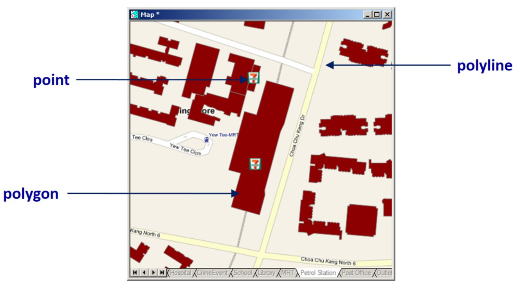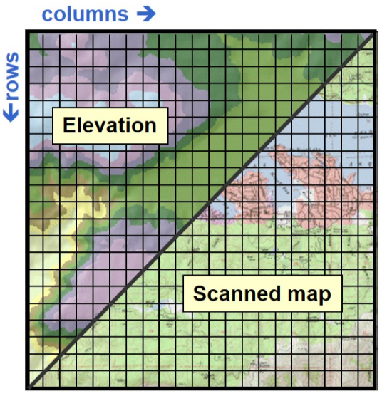
| Vector | Raster | |
|---|---|---|
| Data Representation | Points, lines, and polygons representing discrete features. | Grid of cells or pixels representing continuous data. |
| Data Storage | Stores data as coordinates with associated attributes. | Stores data in a grid format, each cell holding a value. |
| Precision and Detail | Highly precise, ideal for exact measurements and boundaries. | Resolution-dependent, better for continuous data representation. |
| Data Processing | Suited for network analysis and topology-based operations. | Efficient for spatial analysis involving overlays and map algebra. |
| Applications | Used in mapping boundaries, networks, and urban planning. | Used in remote sensing, environmental modeling, and continuous surface analysis. |
| Visualization | Sharp visuals, clear boundaries, smooth scaling. | Can become pixelated when zoomed in; best for surface data like satellite imagery. |
Coordinate System

Provides a location reference to the geospatial data
Types
GCS -Geographic Coordinate System
PCS -Projected Coordinate System
| Geographic Coordinate System (GCS) | Projected Coordinate System (PCS) |
|---|---|
 |
 |
| use a 3D surface (eg. WGS84) | |
| provides accurate position info | |
| not appropriate for distance & area measurements | provides consistent length & area measurement across space |
Need to transform GCS -> PCS before performing geospatial analysis
Simple Features


Shapefile
 |
if read, no need specify extension 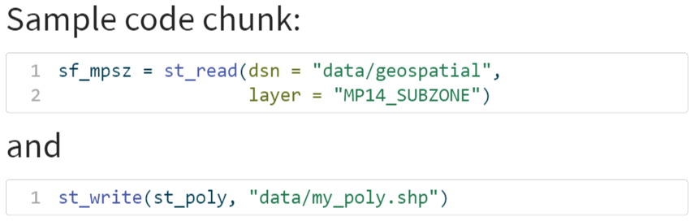 |
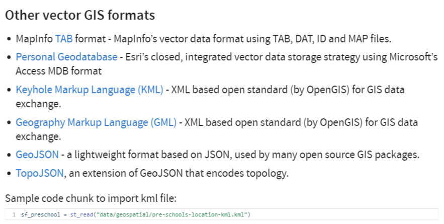
For other vector format, read need to specify extension
consist of a few files
a simple, non-topological format for storing geometric location & attribute info of geographic features
Geographic features in a shapefile can be represented by Points, Lines, Polygons(areas)
SF functions
Geospatial data handling
st_read & read_sf
| Shapefile format | Other format |
|---|---|
| 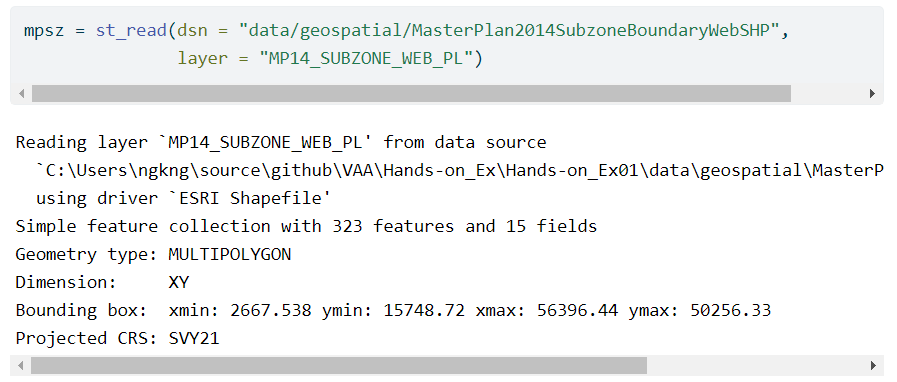 | 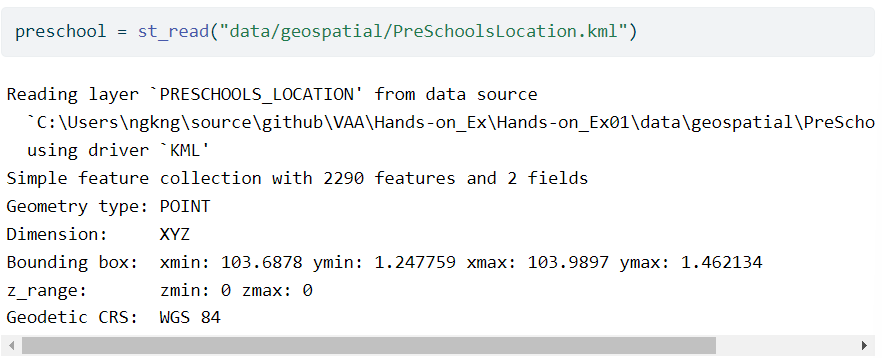 |
read_csv
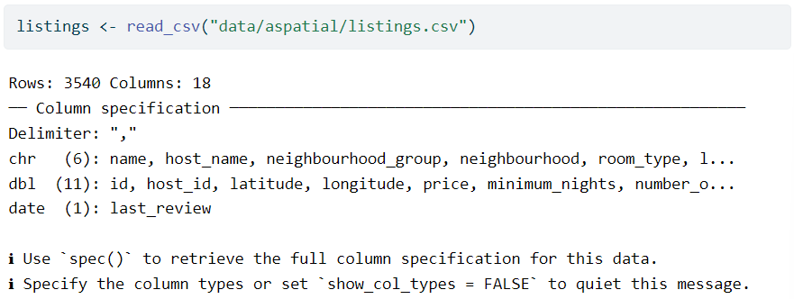
glimpse -> similar to print()
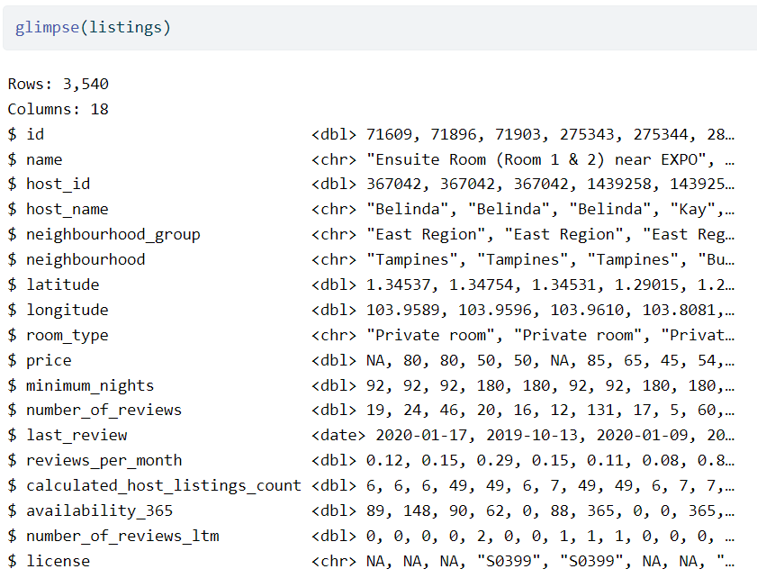
st_write & write_sf
st_as_sf -> convert data frames/spatial objects into "sf" simple features, allowing for spatial data manipulation & analysis
st_as_text -> convert to Well Known Text
st_as_binary
st_as_sfc -> convert coordinate data into "sfc" simple feature collections objects
st_transform -> convert coordinates to a different coordinate reference system
Geospatial confirmation
st_intersects

| st_disjoint -> !intersect | st_equals | st_equal_exacts |
| st_crosses -> cross (don’t touch) | st_touches | st_within |
| st_contains | st_covers | st_covered_by |
| st_overlaps |
Geospatial operations
| st_union | st_intersection |
| st_difference | st_sym_difference |

Geospatial creation
st_interpolate_aw ->
|
st_join eg. join a point data and polygon data together
|

Geospatial operations
| st_line_merge -> merge lines | st_segmentize -> adds points to straight lines |
st_centroid(poly)
|
| st_voronoi | st_convex_hull | st_triangulate |
| st_polygonize | st_simplify -> simplify lines by removing articles |
st_buffer(poly, 5)
|
st_split -> split a ploygon given line geometry |
st_make_valid -> make an invalid geometry valid |
is_boundary -> return the boundary of a geometry |


Geospatial measurement
st_zm -> set/remove z and/or m geometry |
st_coordinates -> returns coordinates in a matrix/data.frame |
st_geometry
|
st_is -> check if geometry is of a particular type |

head -> reveal complete info of a feature object, can select the number of records to display
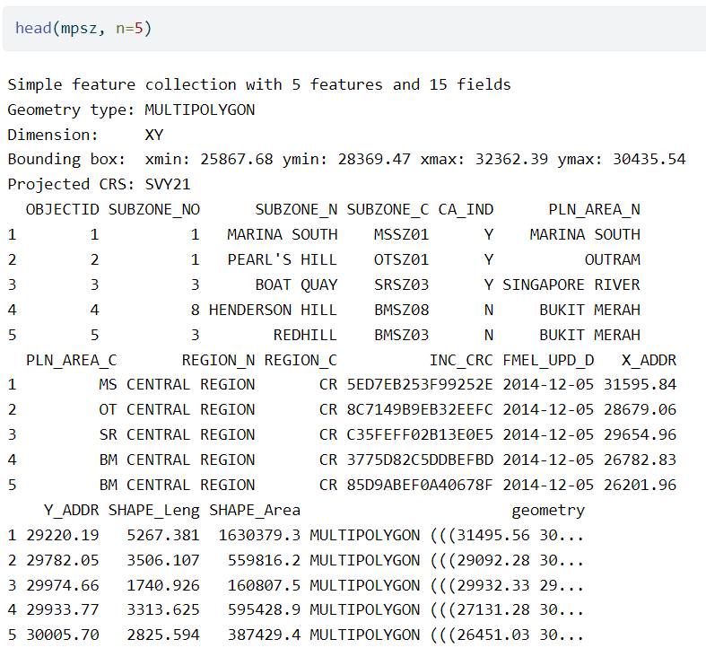
| 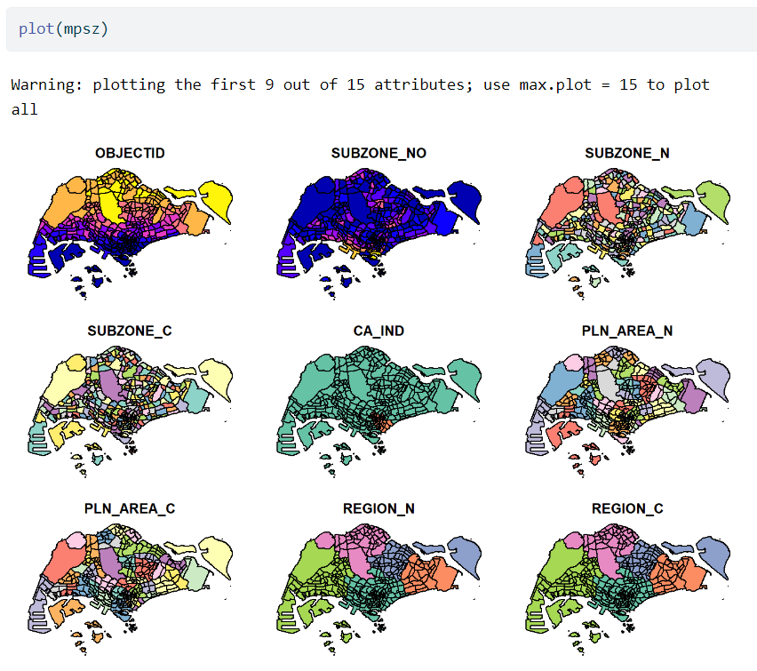 | 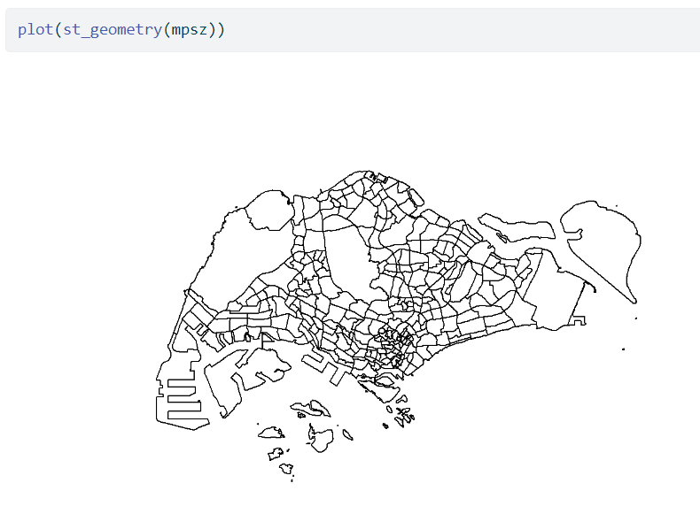 |
| 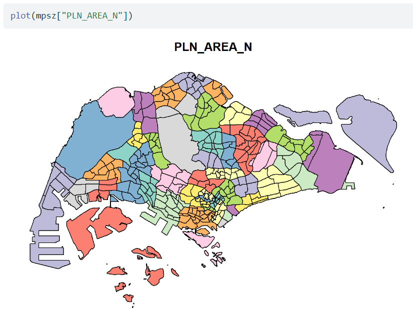 |
To Check coordinate system of mpsz
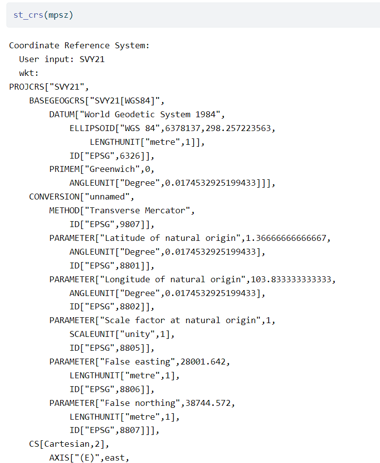
Assign EPSG code to mpsz
Summary
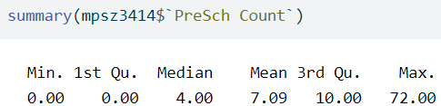
Top n
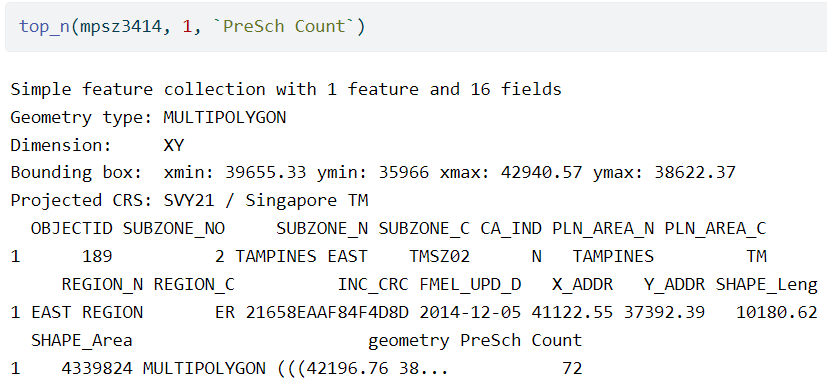
Sum

Compute density
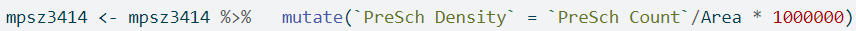
Histogram
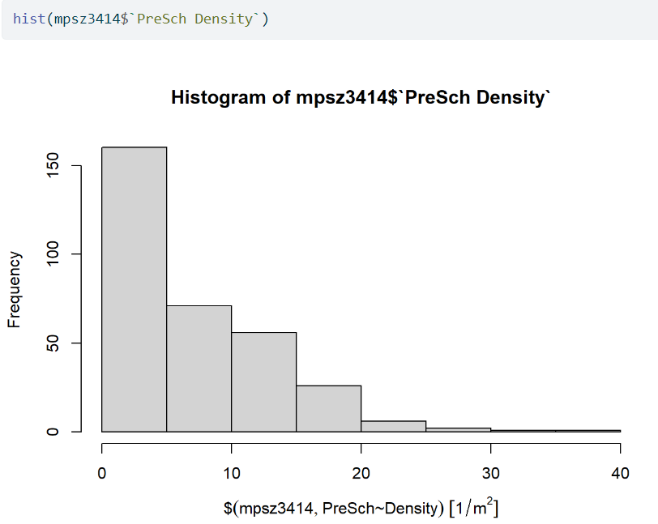